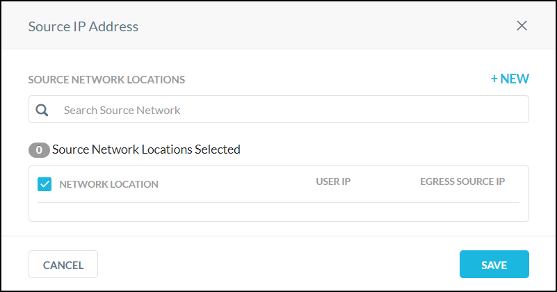

IPSec
Internet Protocol Security (IPSec) is a tunneling protocol for authenticating and encrypting packets inside a transport protocol. IPSec functions like a VPN but with encryption; it transports packets from one endpoint to another endpoint. IPSec has two modes, tunnel mode and transport mode. These instructions are for tunnel mode.
IPSec is ideal for steering HTTP and HTTPS traffic to the Netskope cloud. Configure the source peer IPSec device to send traffic over the IPSec VPN tunnel. The Netskope IPSec gateway validates the source identity of the tunnel configured in the Netskope admin console. If the tunnel identity is not known, the tunnel is not established.
Prerequisites
To use IPSec:
Configure your source peer devices (like routers or firewalls) to establish the IPSec tunnel. Refer to your router (or firewall) documentation for specific configuration instructions.
Download the Netskope root certificate to provision on your devices. Get the Netskope root certificate from: Settings > Manage > Certificates. If you install the Netskope Client on devices, this is not necessary.
Get the closest Netskope point of presence (POP), or data center, IP addresses to steer traffic to the Netskope cloud. Refer to Settings > Security Cloud Platform > Traffic Steering > IPSec in the Netskope UI to get the POP IP addresses.
Get the IP address or fully-qualified domain name and pre-shared key for your source identity devices. You will need to enter this in the Netskope UI, along with the type of encryption cipher and the maximum bandwidth to use.
Ensure you have a Netskope Secure Web Gateway license, which is required to use IPSec.
There is an absolute maximum of 16,000 hosts per IPSec tunnel.
HTTP and HTTPS traffic (typically on ports 80, and 443, but Netskope also supports custom ports) can be sent via the IPSec (or GRE) tunnel. Do not send any other traffic through these tunnels.
IKEv1 and IKEv2 are supported. The NAT-T setting must be enabled. The maximum number of tunnels per IKE connection at one time is 10. Following is the complete list of supported ciphers:
Phase 1 Parameters
Encryption algorithms: AES128-CBC, AES192-CBC, AES256-CBC
Integrity algorithms: SHA256, SHA384, SHA512
DH Group: 14, 15, 16, 18
SA lifetime: 8 hours
Phase 2 Parameters
Encryption algorithms: AES128-CBC, AES256-CBC, AES128-GCM, AES192-GCM, AES256-GCM, Null
Integrity algorithms: SHA256, SHA384, SHA512
DH Group: 14, 15, 16, 18
PFS: Supported
SA lifetime: 2 hours
Authentication
PSK
Workflow
The primary steps to configure IPSec include:
Configure IPSec tunnels in the Netskope UI.
Configure IPSec tunnels on your source identity devices.
After configuring the IPSec tunnels, choose steering/identity options, such as install the Netskope Client or provision the Netskope root certificate on devices.
To watch videos about IPSec setup, steering, and use, go to: Netskope Microlearning videos.
Configure IPSec in the Netskope UI
Follow these steps to set up your IPSec tunnels, which requires adding the IP address or fully-qualified domain name (FQDN) of your routers/firewalls in the Netskope admin console. You will also need to know the pre-shared key used for authentication in you router/firewall to complete these steps.
Go to Settings > Security Cloud Platform > Traffic Steering > IPSec.
You can add IPSec tunnels manually or by uploading a CSV file. To add new IPSec tunnels manually, review these field descriptions ,and then proceed to step 3. To upload a CSV file, which can be up to 10MB large, make sure the file includes:
Tunnel name: Create a tunnel name that makes sense to your topology.
Source IP address: (Optional) As an added security measure, you can restrict this tunnel to only this source IP. Leave this field blank if the source IP address is not static and changes frequently.
Source identity: Enter an IP address, a fully-qualified domain name (FQDN), or an ID in email address format. For example, 1.1.1.1., sourcelocation.company.com, or sourcelocation@company.com., respectively. The source identity is used as the IKE identifier on the router that originates the tunnel.
Primary and Failover Netskope point of presence (POP): Select POPs closest to your location from the dropdown lists.
Encryption cipher type: Select one from the dropdown list.
Pre-shared key: Enter a pre-shared key that both sides of the tunnel will use to authenticate one another. Must be unique for each tunnel.
Max bandwidth limit (in Mbps): (Optional) Designates expected tunnel size. Up to 250 Mbps can be used.
Tunnel state: Like Enabled=true.
Arrange the column structure in the CSV file in this order: Tunnel Name, Source IP Address, Source Identity, Primary POP, Failover POP, Encryption, Cipher, PSK, Maximum Bandwidth, Enabled. For example:
tunnel name,source identity,source ip address,primary pop,failover pop,encryption cipher,psk,maximum bandwidth,enabled TunnelHQ,admin@abc.net,1.1.1.1,31.186.239.114,163.116.178.38,AES128-CBC,netSk0pe,50,true
To upload a CSV file, click Import Tunnels from CSV, click Select CSV File, and select the file. Review the list, and then click Import, which takes you back to the IPSec page.
To create a new IPSec tunnel individually in the UI, click Add New Tunnel, and then add or select these parameters:
Enter a unique tunnel name.
Enter the source IP address.
Enter the source identity in email address format.
Select the Primary and Failover Netskope POPs from the dropdown lists. Select POPs nearest to your location.
Enter your pre-shared key.
Select an encryption cipher type from the dropdown list.
Select the maximum bandwidth for the tunnel from the dropdown list.
When finished, click Save, which takes you back to the IPSec page.
After a tunnel has been established, it appears in the table on the IPSec page. The table shows the status of the tunnel, the name, source peer, Netskope POP, and the throughput in kilobytes per second (Kpbs). You can edit, disable, or delete a tunnel.
The status types are:
Tunnel Up: The IPSec service is observing keepalive packets from the IPSec device.
Tunnel Down: The IPSec service is not observing any keepalive packets for one minute from the IPSec device. Tunnel down does not mean Netskope will stop processing a tunnel packet; Netskope continues to process the packet.
Tunnel Unknown: This is a transient state if the IPSec service is not reported any status to the Netskope UI.
Tunnel status is displayed as up or down based on the RFC standard Dead Peer Detection. Enable your tunnel as a permanent tunnel or enable Dead Peer Detection on the device to ensure a reliable status output in the UI.
Click on a tunnel to open the Tunnel Details side panel, and to make changes to the tunnel, click Edit. Also, click the ... icon to the right of the tunnel listing to view details, edit, enable, disable, or delete the tunnel.
Configure IPSec Tunnels
Netskope recommends configuring IPSec tunnels from your router/firewall to two different Netskope POPs. This ensures resiliency for tunneling traffic through IPSec in the event one of the two identity source peers is temporarily not available.
Here is an example of how to configure your IPSec tunnels:
 |
Configure your router/firewall for IPSec. Use policy-based routing so only web traffic is steered through the IPSec tunnel.
Configure the IPSec tunnel to direct traffic to the the Netskope POP. The POP addresses are available in the Netskope admin console at Settings > Security Cloud Platform > Traffic Steering > IPSec when you click Add New Tunnel. The POPs are shown in the dropdown lists for the Primary and Failover Netskope POPs.
Once traffic is directed to the Netskope cloud, use the Netskope admin console to manage the connections.
Traffic Steering and Identity Options
To steer traffic and identify users, use one or more of these method.
Install the Netskope Client for Root CA Distribution, User Identity, and User Notifications
Installing the Netskope Client is optional, but doing so facilitates certificate distribution on devices and provides coverage for remote users. The Client provides user identification directly to Netskope and eliminates the need to implement authentication on the IPSec tunnel.
We recommend installing the Client so it can send device and user info to the Netskope Cloud and show user-facing notifications that result from policy violations. To do this, go to Settings > Security Cloud Platform > Netskope Client > Devices > Client Configuration and enable the feature Enable Device Classification and Client-Based End User Notifications when the Client is Disabled. When the Client detects an IPSec tunnel, it disables the data tunnel (TLS tunnel) to the Netskope platform, but continues sending user identity to Netskope and facilitating user notifications on the endpoint.
Provision Certificates on Devices
Get the root certificate from the Netskope UI and provision it on your devices. In the Netskope UI. Go to Settings > Manage > Certificates to download the certificates.
Use SAML Authentication
You can use SAML to authenticate a user to Netskope before their connection is allowed to traverse the IPSec tunnel. Use Netskope as an authentication mode to integrate with an Identity Provider (IdP). This feature acts as an authentication module taking Netskope's framework and an IdP's auth assertion after authentication.
To watch a video about forward proxy SAML authentication configuration for IPSec, click play.
Enable Authentication
Go to Settings > Security Cloud Platform > Forward Proxy > Authentication.
Click Enable Authentication.
Click the Enabled checkbox to turn this feature on.
For the Authentication Type, select SAML based.
Click Create New for SAML based authentication. The Add SAML Account window opens.
Configure these parameters:
Name: Enter a name identifying the account.
IdP URL: Contact your third party Identity Provider and add the unique IdP login URL in this field.
IdP Entity ID: Type your globally unique name for your SAML entity.
IdP Certificate: Copy and paste the PEM format certificate of the third party IdP in this field. This is required by Netskope to validate the signature of the SAML assertion.
Alternate User ID Field: Netskope looks at the NameID field in the SAML assertion to get the user identity. If you would like to use another field for user identification, type the name of the SAML attribute in this field.
Group Attribute: Type your name:value pair to identify / describe your entities user group and role memberships.
Click Save.
Authentication Bypass Settings
You can specify domains, web categories, and network IP addresses for which user authentication is not required.
Click Edit and add comma-separated URLs to bypass. When finished, click Save.
 |
Note
Adding your IdP domains here are recommended.
Click Edit and add comma-separated URLs to bypass. When finished, click Save.
 |
Click Edit and search for source networks. For each of the networks found, you can choose to bypass based on User IPs or Egress IPs (just one, not both).
|  |
If search does not locate the network you want to bypass, click +New to add it.
 |
Enter the IP address, IP address range, or CIDR netmask in the text field, and then click the adjacent + button. Multiple network locations can be added. After adding the network locations, click Next, enter a name, and then click Save Network Location.
Select User IP or Egress Source IP for each network location, and then click Save.